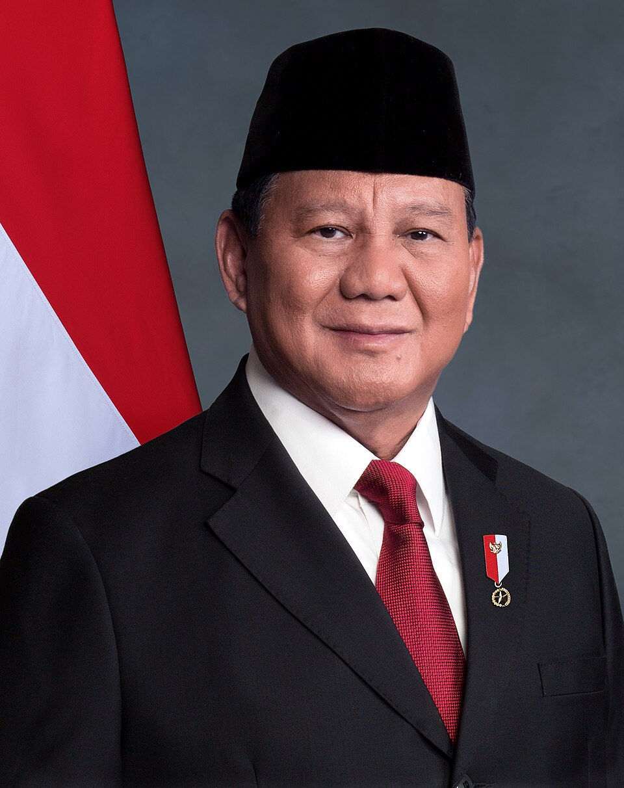

Biografi
Prabowo Subianto lahir pada 17 Oktober 1951 di Jakarta.
Ia adalah Presiden ke-8 Republik Indonesia sejak 20 Oktober 2024.
Sebelumnya menjabat menjadi Menteri Pertahanan dan memiliki karier militer sebagai Jenderal TNI.
Fakta Singkat
| Jabatan | Presiden Republik Indonesia |
|---|---|
| Periode | 2024-2029 |
| Partai | Gerindra |
| Penghargaan | Bintang Mahaputera, Legion of Honour |
| Program | Makan Bergizi Gratis |
Foto Resmi
Pidato Pelantikan
Kontak
Email:presiden@presidenri.go.id
Website: presidenri.go.id